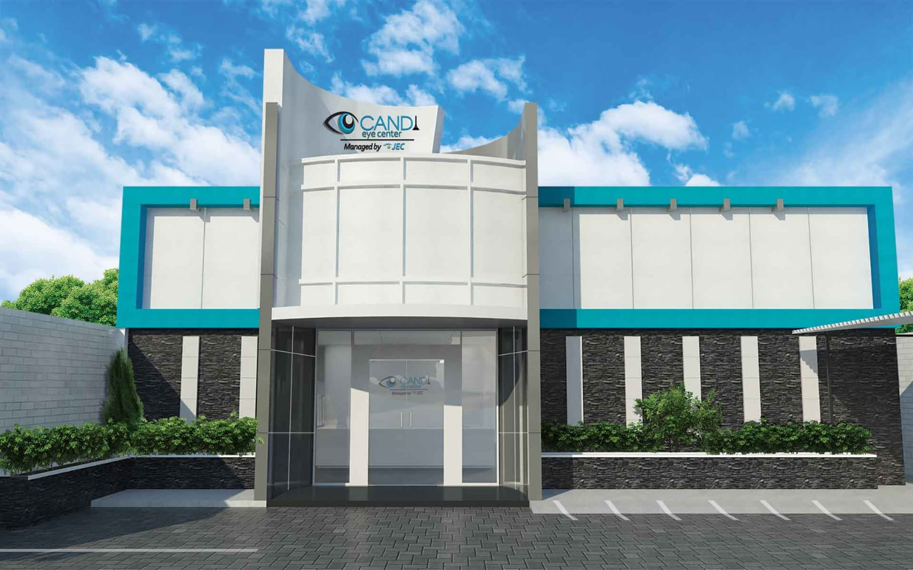

|  | |||||||||
SELAMAT DATANG DI WEBSITE KAMI
Klinik Utama Mata Candi Eye Center , terletak di Jalan Dokter Wahidin Blok FHG No.2, Candi, Kec. Candisari, Kota Semarang, Jawa Tengah 50254 Candi Eye Center merupakan Klinik mata komprehensif di Kota Semarang yang baru opening pada 30 Mei 2012. Didukung dengan 18 dokter spesialis mata dengan spesialisasi antara lain Infeksi mata luar dan infeksi imunologi, katarak dan bedah refraksi, ofthalmologi anak, glaukoma, refraksi dan lensa kontak, strabismus, retina dan vitreus, trauma dan okuloplasti, tumor mata, neuro-oftalmologi. Serta didukung fasilitas peralatan yang canggih seperti refraktrometer, non contact tonometer, slit lamp biomikroskopi, USG mata, biometri mata, laser fotokoagulasi retina, laser untuk penderita glaukoma, laser untuk katarak sekunder dan operasi katarak phakoemulsifikasi. Klinik Mata Candi Eye Center Semarang: Alamat Jalan Dr Wahidin FHG 2 Semarang [Pertigaan Kaliwiru]. Nomor Telepon 024 8501426 |
Apotek Laboratorium Instalasi Gawat Darurat (IGD)
| ||||||||
© D22.2022.03393 - Astrid Maulidya Ayu